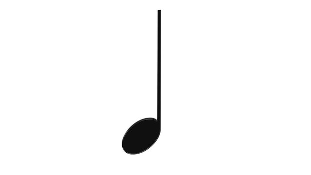
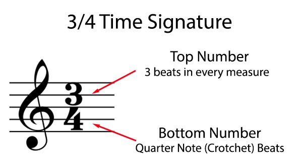

In order to read music, we must first understand the duration of different kinds of notes. A whole note has a duration of 4 beats.
A half note has a duration of 2 beats.

A quarter note has a duration of 1 beat.
An eighth note has a duration of 1/2 of a beat. When reading music with eighth notes, we can subdivide the beats in half. Instead of counting 1-2-3-4, we can count 1-and 2-and 3-and 4-and, whereas each "and" represents an eighth note.

A sixteenth note has a duration of 1/4 of a beat. When reading music with sixteenth notes, we can subdivide the beats into fourths. Instead of counting 1-2-3-4, we can count 1-e-and-a 2-e-and-a 3-e-and-a 4-e-and-a, whereas each "e," "and," and "a" represents a sixteenth note.

Lastly, in order to successfully understand rhythms, you must understand time signatures. In sheet music, you will notice a bunch of vertical lines that divide bar lines into measures. Time signatures define the amount and type of notes that each measure contains. You will notice that there are two numbers. The top number describes how many notes are in a measure. The bottom number tells you which type of note gets one beat. Most commonly you will be in 4/4 time, meaning that there are four notes in a measure, and the quarter note gets the beat. In time signatures like 6/8, however, there are six notes in a measure, and the eighth note is worth one beat.
For some practice with reading rhythms go to this website Rhythm Practice